Secure DevOps Tools & Cloud Computing · FIAP · Engenharia de Software · 4ES · Global Solution 2026.2 · CitizenTech
| Integrante | RM |
|---|---|
| Gustavo Henrique Santos Bonfim | RM98864 |
| João Pedro Marques | RM98307 |
| Kayky Paschoal Ribeiro | RM99929 |
| Lucas Yuji Farias Umada | RM99757 |
| Natan Eguchi dos Santos | RM98720 |
Repositório: https://github.com/Natan-TI/devops-energia
URL pública do MVP: http://100.60.176.115
Pipeline: https://github.com/Natan-TI/devops-energia/actions
Evidências originais: docs/evidencias no repositório
O MVP é o painel do comerciante do produto Energia que dá Lucro: uma API com telas que mostram, em reais e em kWh, o desperdício causado por portas de geladeiras e freezers abertas (detectadas por câmera) e por luzes acesas em ambientes vazios (detectadas por um robô com sensor de luminosidade). Os eventos exibidos são gerados por um simulador, no mesmo formato que a aplicação de visão computacional do grupo produz.
| Bloco da atividade | Como foi atendido | Onde ver |
|---|---|---|
| Container | Dockerfile em dois estágios, usuário sem privilégios (uid 10001), sem pip na imagem final e nenhum segredo embutido. docker compose sobe banco, API e simulador. | Dockerfile, docker-compose.yml |
| Infraestrutura como código | Terraform cria máquina, endereço fixo e grupo de segurança. Estado e .tfvars fora do repositório. Nenhuma porta de administração aberta: não existe regra para a porta 22. | infra/, seção 5 |
| Pipeline DevSecOps | GitHub Actions com testes, Gitleaks, Semgrep, build e Trivy a cada push; credenciais em GitHub Secrets; deploy automático. Uma execução barrada e a corrigida. | .github/workflows/pipeline.yml, seção 4 |
| Observabilidade | Prometheus e Grafana com as quatro métricas de ouro e cinco alertas. O alerta de taxa de erros foi disparado e resolvido. | observabilidade/, seção 6 |
| Documentação | Arquitetura, responsabilidade compartilhada, LGPD, custo e README reproduzível. | Seções 2, 7, 8 e 9 |
| Componente | Tecnologia | Papel |
|---|---|---|
| API e telas | Python 3.13, FastAPI, Jinja2 | Recebe eventos e alertas, calcula os resumos e monta as telas no servidor, sem JavaScript. |
| Banco de dados | PostgreSQL 17 | Guarda eventos e alertas. Só é acessível pela rede interna do compose. |
| Simulador | Python (biblioteca padrão) | Gera eventos de porta aberta e de luz acesa, no contrato combinado pelo grupo. |
| Infraestrutura | Terraform, AWS EC2 | Uma máquina com endereço fixo e um grupo de segurança. |
| Pipeline | GitHub Actions | Verifica e publica a cada push. |
| Observabilidade | Prometheus 3.16, Grafana 13.3 | Métricas, painel e alertas. |
| Camada | Medida |
|---|---|
| Imagem | Dois estágios; usuário sem privilégios; correções de segurança do sistema aplicadas no build; pip removido da imagem final; só o código da aplicação entra na imagem (.dockerignore por lista de permissão). |
| Contêineres | Sistema de arquivos somente leitura, todas as capacidades do Linux removidas e no-new-privileges na API e no simulador. |
| Segredos | Nenhum segredo no código, na imagem ou no repositório. Local: arquivo .env fora do git. Nuvem: gerados dentro da máquina. Pipeline: GitHub Secrets. O Gitleaks varre todo o histórico a cada push. |
| Aplicação | Escrita só com chave no cabeçalho X-API-Key, comparada em tempo constante; entradas validadas por esquema; /metrics exige token na nuvem; cabeçalhos de segurança e política de conteúdo que proíbe scripts; exportação CSV protegida contra injeção de fórmulas. |
| Rede | Entrada só na porta 80. Saída só nas portas 80 e 443. Banco sem porta publicada. Sem SSH: a administração é feita pelo AWS Systems Manager. |
| Máquina | Disco criptografado; serviço de metadados só com token (IMDSv2). |
| Pipeline | Permissão mínima (contents: read); ações fixadas pelo hash do commit; o deploy só roda na branch principal e depois de todas as verificações. |
O pipeline roda a cada push, com cinco jobs. Os quatro primeiros rodam em paralelo; o deploy depende de todos eles.
| Job | Ferramenta | O que barra |
|---|---|---|
| Testes | pytest (17 testes) | Regressão na API, nas telas e nas regras. |
| Gitleaks | Gitleaks | Segredo em qualquer commit do histórico. |
| Semgrep | Semgrep | Padrões inseguros no Python, no Dockerfile, no compose e no Terraform. |
| Build e Trivy | Docker, Trivy | Vulnerabilidade alta ou crítica com correção disponível na imagem; configuração insegura no Dockerfile e no Terraform. |
| Deploy na AWS | AWS CLI, Systems Manager | Publica o commit na máquina e confere /health. |
| Execução | Commit | Resultado |
|---|---|---|
| #3 | Adiciona python-multipart na versão 0.0.6 | Barrada pelo Trivy: 5 vulnerabilidades altas na imagem. |
| #4 | Atualiza python-multipart para a versão 0.0.33 | Passou. |
A execução #2, logo antes, também falhou, mas por outro motivo: a biblioteca escolhida na primeira tentativa não instalava no Python 3.13, e o pipeline parou na instalação, antes do Trivy. Ela ficou no histórico e não é usada como evidência.
Antes do primeiro push, as mesmas ferramentas rodaram localmente e apontaram problemas reais, que foram
corrigidos: o Semgrep acusou o uso de urllib com endereço dinâmico no simulador, e o Trivy
acusou 7 vulnerabilidades altas na imagem (biblioteca zlib do sistema e pacotes embutidos no
pip).
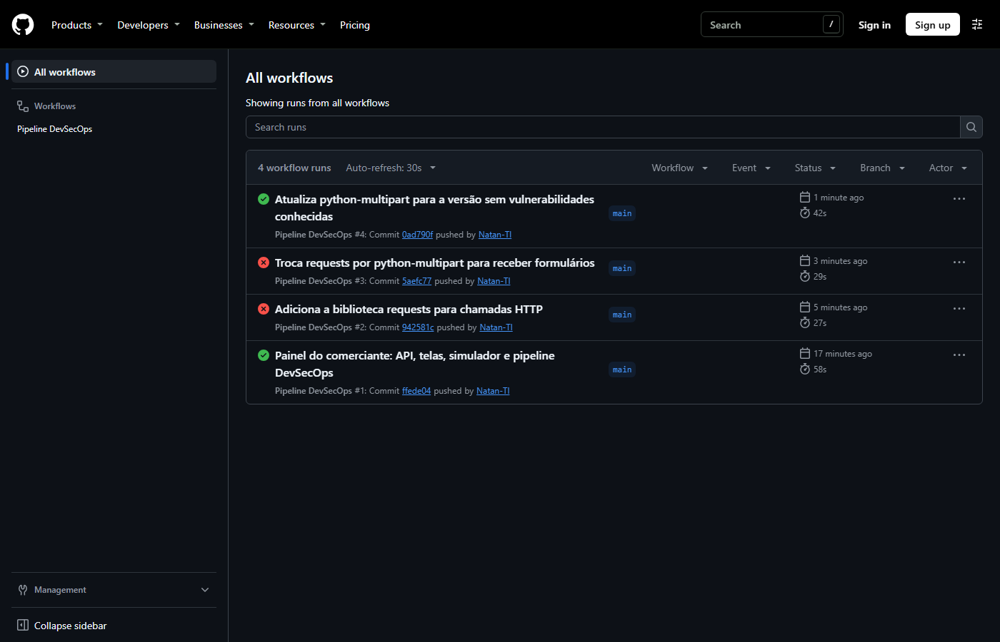
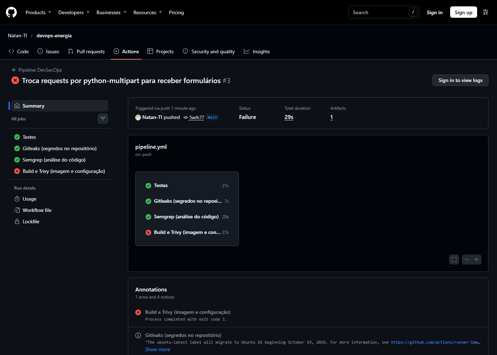
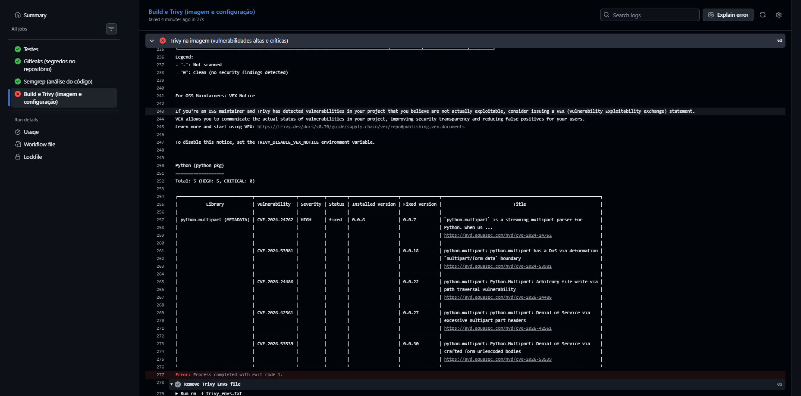
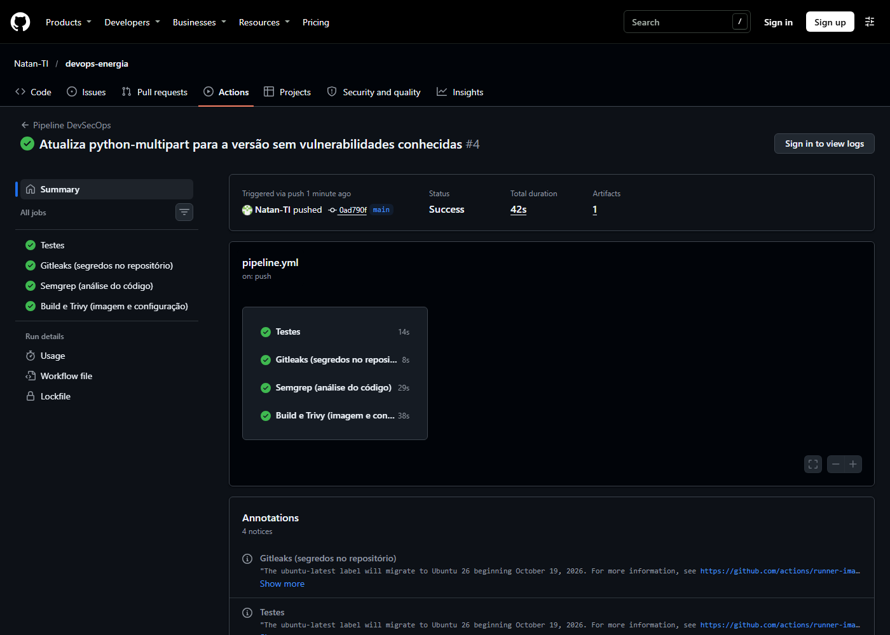
O job de deploy usa credenciais guardadas em GitHub Secrets, localiza a máquina pela etiqueta e envia um
comando pelo AWS Systems Manager: baixar o commit, construir a imagem e subir os contêineres. Ele só termina
com sucesso quando o painel responde em /health. Não há chave SSH nem porta 22.
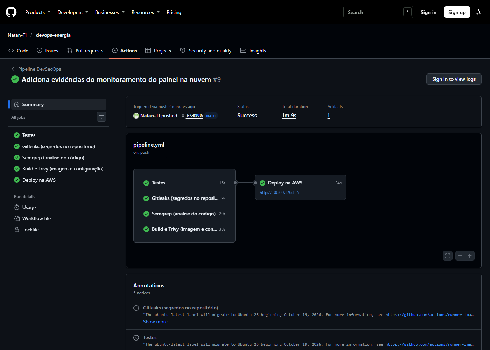
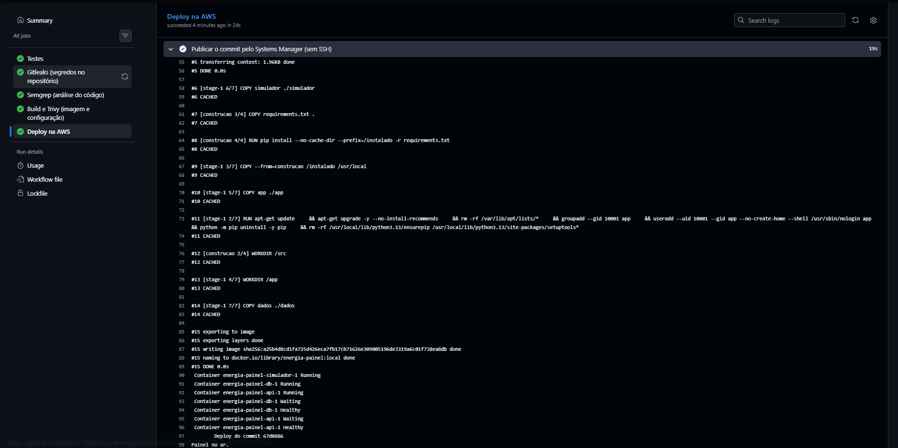
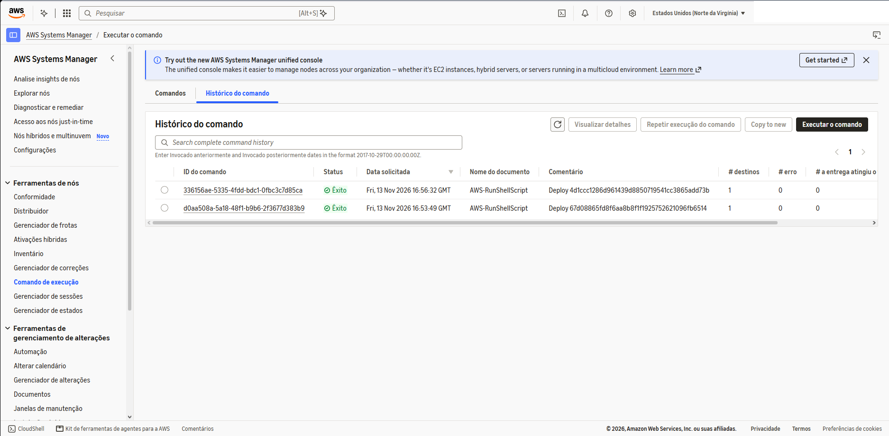
O Terraform cria sete recursos: a máquina, o endereço fixo, o grupo de segurança com três regras e o
token de métricas. O ambiente é o AWS Academy Learner Lab, que não permite criar papéis de IAM; por isso a
máquina usa o perfil LabInstanceProfile, que já existe no laboratório.
*.tfstate e *.tfvars estão no .gitignore. As credenciais da AWS vêm do ambiente e nunca aparecem nos arquivos.terraform validate passou, e o Trivy não encontrou problemas de severidade média, alta ou crítica. As duas regras públicas (entrada na porta 80 e saída nas portas 80 e 443) têm exceção documentada no código.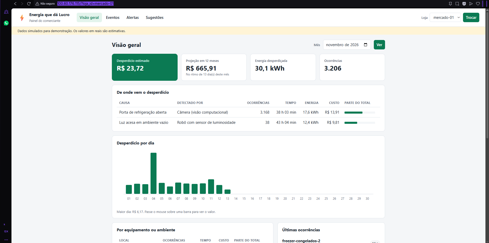
100.60.176.115. O navegador avisa "Não seguro" porque o MVP não usa HTTPS (veja a seção 10).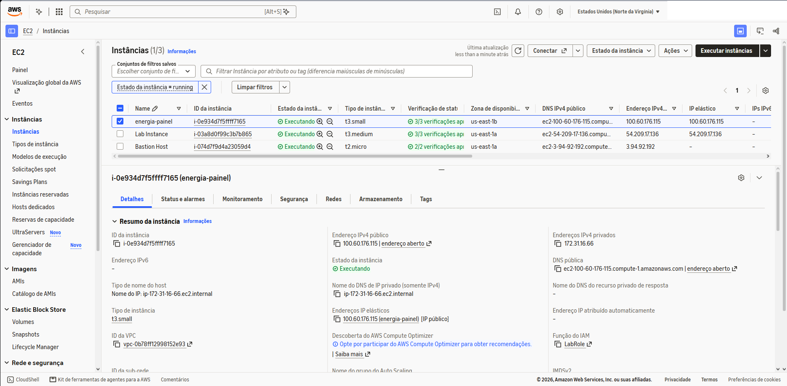
energia-painel em execução, com o IP elástico.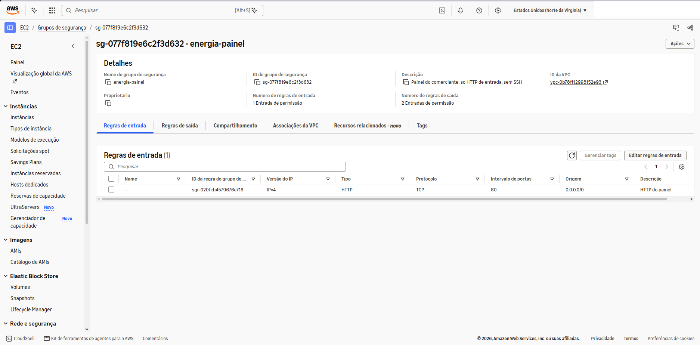
Respostas do painel publicado (arquivo 11-nuvem-respostas.txt): /health responde 200,
/metrics sem token responde 401 e a porta 22 não responde.
A API expõe métricas para o Prometheus, que as coleta a cada 5 segundos. O Grafana mostra as quatro métricas de ouro. Os dois rodam no computador da equipe e apontam para o painel local ou para o publicado.
| Métrica de ouro | O que o painel mostra | Alerta |
|---|---|---|
| Tráfego | Requisições por segundo, por rota; eventos recebidos por minuto. | SemTrafego: nenhuma requisição em 5 minutos. |
| Erros | Taxa de respostas 5xx; respostas por código. | TaxaDeErrosAlta: mais de 5% por 30 segundos. |
| Latência | Percentis p50, p95 e p99; tempo médio por rota. | LatenciaAlta: p95 acima de 0,5 s por 2 minutos. |
| Saturação | CPU e memória da API; requisições em andamento. | MemoriaAlta: mais de 400 MB por 5 minutos. |
Há também o alerta PainelForaDoAr, para quando o Prometheus não consegue ler as métricas.
Em 12/11/2026, no ambiente local, o contêiner do banco de dados foi parado às 21:32. A API passou a
responder com erro 500, a taxa de erros chegou a 100% e o alerta TaxaDeErrosAlta disparou cerca
de um minuto depois. O alerta LatenciaAlta também disparou, porque as requisições ficaram
esperando o banco. O banco foi religado às 21:33 e os alertas se resolveram sozinhos.
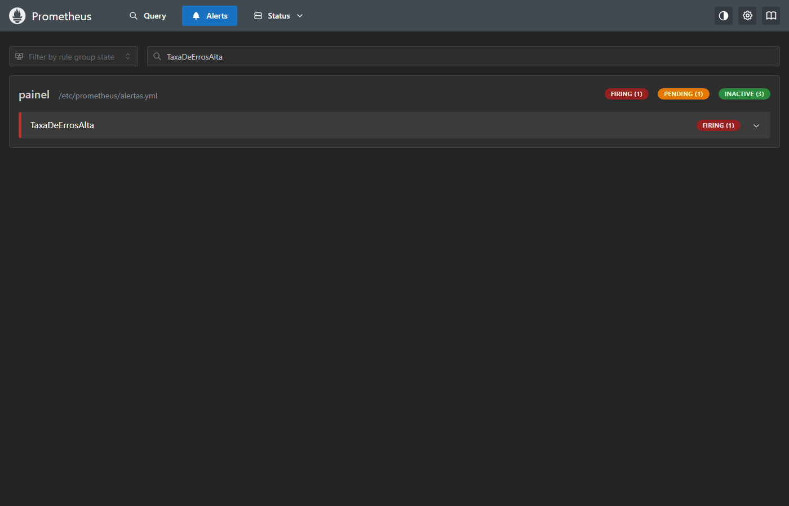
TaxaDeErrosAlta em estado FIRING.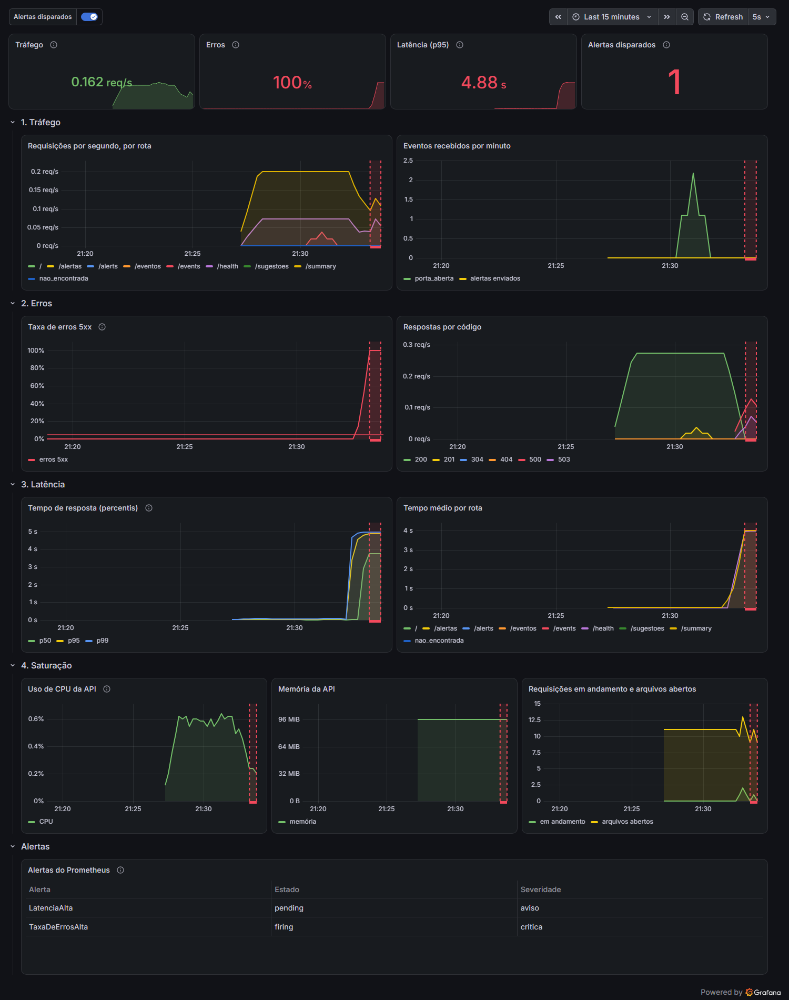
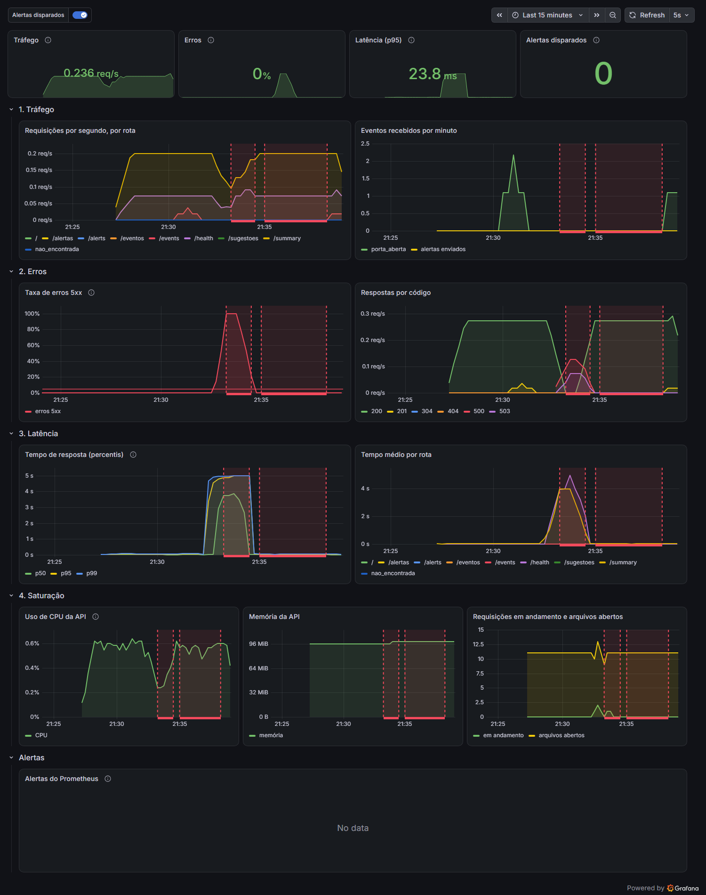
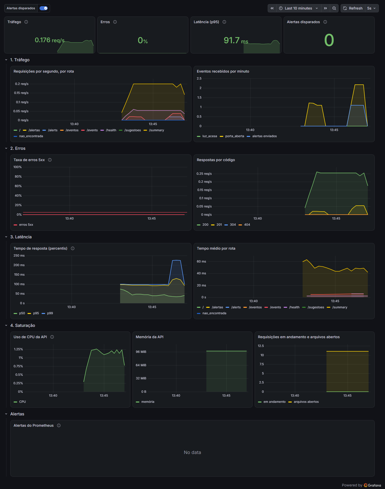
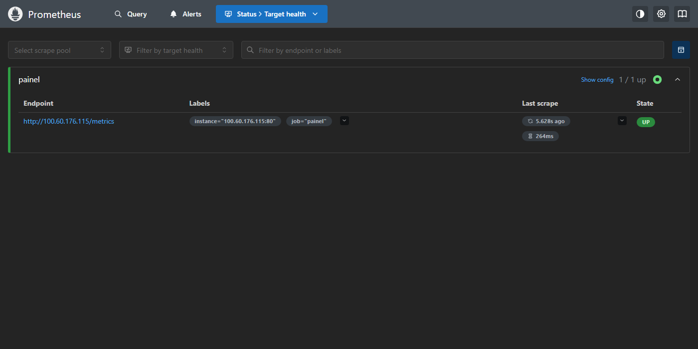
100.60.176.115 em UP.Na AWS, a segurança é dividida: a AWS cuida da nuvem, e o cliente cuida do que coloca nela. Como o MVP usa uma máquina virtual (EC2), a maior parte da configuração é responsabilidade da equipe.
| Camada | Responsável | Neste projeto |
|---|---|---|
| Datacenter, rede física, hardware e virtualização | AWS | Região us-east-1. |
| Disponibilidade dos serviços (EC2, EBS, Systems Manager) | AWS | Usados como serviço. |
| Contas e permissões de acesso (IAM) | AWS Academy e equipe | O laboratório entrega um papel pronto (LabRole). Em uma conta própria, a equipe criaria um papel com a permissão mínima. |
| Regras de rede | Equipe | Grupo de segurança definido no Terraform. |
| Sistema operacional e atualizações | Equipe | Amazon Linux 2023. As atualizações do sistema base da imagem são aplicadas a cada build. |
| Aplicação e dependências | Equipe | Verificadas por Semgrep e Trivy a cada push. |
| Segredos | Equipe | GitHub Secrets e arquivo .env na máquina. |
| Dados, criptografia e cópias de segurança | Equipe | Disco criptografado. O MVP não faz cópia de segurança do banco. |
| Monitoramento e resposta a incidentes | Equipe | Prometheus, Grafana e alertas. |
| Dado | É dado pessoal? | Onde fica |
|---|---|---|
| Eventos (loja, equipamento, início, duração, custo) | Não. Descrevem equipamentos, não pessoas. No MVP, são fictícios. | PostgreSQL, na máquina da AWS. |
| Alertas (loja, equipamento, canal, mensagem) | Não no MVP: o simulador não usa telefone nem nome. | PostgreSQL, na máquina da AWS. |
| Imagens das câmeras | Sim, quando mostram pessoas. | Não chegam à nuvem. A detecção roda no computador da loja, que envia só o evento. |
| Endereço IP de quem acessa o painel | Sim. | Registro de acesso da API, no log do contêiner, dentro da máquina. |
| Cadastro do comerciante (nome, telefone para alertas) | Sim. | Não existe no MVP: o painel não tem cadastro nem login. |
O MVP foi desenhado para não precisar de dados pessoais (minimização). Para virar produto, estes pontos precisam ser tratados:
Custo mensal da infraestrutura do MVP ligada 24 horas por dia, com preços de tabela da região us-east-1, sob demanda, em dólares. Os preços foram conferidos em sites de comparação em 13/11/2026 e devem ser confirmados na calculadora oficial da AWS.
| Item | Quantidade | Preço unitário | Custo mensal |
|---|---|---|---|
| EC2 t3.small (2 vCPU, 2 GB) | 730 horas | US$ 0,0208 por hora | US$ 15,18 |
| Disco EBS gp3 | 20 GB | US$ 0,08 por GB | US$ 1,60 |
| Endereço IPv4 público | 730 horas | US$ 0,005 por hora | US$ 3,65 |
| Tráfego de saída | Menos de 1 GB | Primeiros 100 GB gratuitos | US$ 0,00 |
| Systems Manager (Run Command) | - | Sem custo adicional | US$ 0,00 |
| GitHub Actions | Cerca de 2 minutos por push | Gratuito em repositório público | US$ 0,00 |
| Total estimado | US$ 20,43 | ||
DEPLOY_ATIVO).O passo a passo completo está no README do repositório. Em resumo:
.env.example para .env e preencher as senhas.docker compose up -d --build e abrir http://localhost:8000.docker compose -f docker-compose.yml -f docker-compose.observabilidade.yml up -d.terraform init e terraform apply na pasta infra/, com as credenciais da AWS no ambiente.